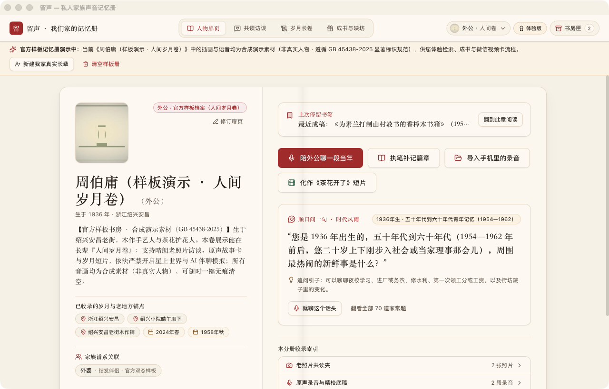

让长辈的乡音与老照片，留在自家电脑里的传家书
无需注册云端账号，也不用担心按年续费或服务停服。留声把离线语音转写、字级原声溯源、B5 印厂级排版和生命态伦理守护装进一台 Mac 本机——子女陪爸妈翻旧照片聊半小时，就能做出一家人永远带得走的传家书与纪念短片。

样板演示 · 在世长辈「人间岁月卷」（合成音画素材 · 遵循 GB 45438-2025）：展示 1936 年生人年代校准话头、照片时间轴与原声精校入口；在世分册全栈禁止任何 AI 替身对话。
为什么很多子女开始拒绝把家史放在云端订阅 App 里？
过去两年多家云端数字遗产服务停服或停止维护、普通 AI 回忆录动辄改掉老人乡音并错认小村与老厂名，让家庭陷入既担心隐私泄漏、又怕断续费后带不走资料的两难。留声选择一条更克制但也更踏实的路。
常见纯云端工具的现实隐患
- 厂商停服或停续费，记忆随时失联：绑定按年账号或单独高价解锁 PDF，停止付费后往往难以完整编辑或带走原档。
- 大模型过度润色，丢失家人真话：把地方口音与质朴回忆改写成千篇一律的公文腔，甚至凭空编造未说过的年代细节。
- “AI 复活真人在线”越界消费情绪：未经近亲属清晰授权将逝者包装成实时对话，违背法律底线与家人心理安全感。
留声 3.0 的工程级档案承诺
-
一次买断、零静默上传：无需账号，SenseVoice 离线转写与 Typst 排版全内置于本机，
.liusheng归档在任何状态下均可免费原样导出。 -
字级原声溯源，
raw/edited双保留：每段成稿均精确锚定原声毫秒切片与0.5x慢放精校，拒绝编造地名与乡音。 - 在世 / 已逝严格双态隔离：已逝亲人空间必须完成《民法典》第 994 条第一顺位近亲属存证且支持随时一键撤回冻结，绝不冒充逝者在线对话。
从陪爸妈聊天到拿到可印制的传家书，每一步都落地在本机
内置《外婆/外公的岁月留声》完整双态样板书房（可随时一键无痕清空），子女可以先看成书和听原声演示，再决定替自己父母建档。
看着老照片顺口共读，不必父母动笔打字
70 道年代校准话头依据长辈出生年份自动适配青年、知青/进厂、成家等时代问题；支持 Mac 麦克风实时录制或直接拖入微信手机旧录音。内置 Sherpa-ONNX 离线转写与 0.5x–1.25x 慢放逐句校对，长访谈按重点书签一键拆分成章，保留方言词味不失真。
印厂级 B5 传家书、有声书与纪念短片一套交付
Typst + LGPL FFmpeg 本地引擎
可一键输出直接交给图文快印店印制的 B5 宣纸版心（含 3mm 出血线与裁切线）、长辈微信双击打开就能听原声的单文件离线 .html、微信竖屏有声视频卡，以及本机双音轨混音渲染的《茶花开了》四幕纪念短片（微信分享版片头带符合 GB 45438-2025 ≥5% 高度的显式 AI 标识）。
为独立口述史与家庭影像工作室准备的多客户工作台
Multi-Vault 物理隔离工作室版为每个受托家庭建立物理隔离的独立文件夹与 SQLite 库，严防跨客户串档；支持定制版权页出品机构署名、导出《受访长辈知情同意与原声溯源存证书》PDF 及配套《个保法》委托处理协议模板，把原本一两天的转写校对与排版压缩到一个晚上。
透明版本与价格：先免费完整试用，认可再买断
所有激活码均基于 Ed25519 非对称签名在软件本机 0.1 秒离线核验，不绑定单一硬件机器码（家用支持最多 3 台自有 Mac 交替整理）。
免费体验版
先体验完整《外婆/外公》双态样板书房，再为第一位长辈建档试录。
- 可建 1 位真实长辈档案、保存 3 篇真实故事卡
- 可导出 A4 家用校阅稿与 1 支微信有声视频卡
-
原图、原声录音与
.liusheng全量备份始终免费导出
传家典藏买断版
适合重阳、寿辰送给父母长辈的心意，永久解锁全家谱系与印厂级出版。
- 不限人数祖辈档案与夫妻家族关系谱系
- 不限篇数长卷故事、书签拆章与不限次微信视频卡
-
B5 传家书 + 3mm 印厂出血 PDF与免解压有声
.html -
LS2-FAM离线激活码 · 同一家庭最多 3 台 Mac 可用
当前早鸟人工发码通道（前 50 户专享 ¥198）：
线上自动收款台正在对接中；如需立即获取 LS2-FAM 正版买断授权（含 14 天不满意无忧退款保障），请先下载体验版试用《外婆》样板书房，并致信 support@liusheng.app 备注「早鸟传家版」，我们将在 1 个工作日内为您签发离线激活码。
工作室尊享版
面向家史代写师、家庭纪实摄影、金婚影楼与高端康养机构。
- 包含传家典藏版全部离线转写、短片与出版能力
- 多客户家庭物理隔离库（Multi-Vault）防串档
- 定制画册版权页出品机构署名 + 商用《知情存证书》与 DPA 模板
-
LS2-STU年卡 · 到期转只读仍可免费导出全量客户资产
首批 3–5 家口述史 / 影像工作室试点优惠通道：
正在招募首批深度试用工作室（可申请 30 天全功能 LS2-STU 评估码配合实际交付测试）。请发邮件至 support@liusheng.app 简述工作室所在城市与常规成书交付量。
.liusheng-flow.zip / .liusheng-star.zip 离线协作包。按次计费的云端实时渲染算力券（LS3-*）现阶段暂不公开对外兜售（软件内仅保留兑换口用于内测定制制作包），确保每位购买用户买到的功能都 100% 在本机可用。
下载与安装检验：先核对配置与校验和
桌面端已内置 SenseVoice int8 + Silero VAD、Typst 与 LGPL FFmpeg，下载单个磁盘镜像后即可全程断网工作。
- 当前发行版本 v3.0.0（macOS Apple Silicon 正式版）
-
安装镜像文件
Liusheng-3.0.0-macOS-arm64.dmg· 约 210 MB - 硬件与系统要求 Apple Silicon（M1 / M2 / M3 / M4） · macOS 12.0+ · 暂不支持 Intel Mac 或 Windows
待配置发布镜像校验和
首批体验安装包分发方式：
公网 CDN 分发直链正接入中；如果您正参与留声家庭或工作室试用，请使用邀请包附带的原版镜像，并比对上方 SHA-256 完全一致后安装；或联系 support@liusheng.app 获取镜像直传链接。
macOS 首次打开必读（公证接入过渡期指引）
- 本机版本正完成 Apple Developer ID 公证配置；此前版本在 macOS 15 首次双击可能提示“来自身份不明的开发者”。
- 若被系统拦阻，请先在弹窗点击「好」，然后打开左上角苹果菜单 → 「系统设置」→「隐私与安全性」。
- 向下滚动到「安全性」区块，点击“已阻止使用‘留声’”右侧的「仍要打开」并通过密码或指纹确认，仅首次打开需要操作一次。
- 完整图文与终端排查命令见 《安装、激活与排障指南》。
买断、隐私与平台支持常见问题
为什么当前只有 Apple Silicon Mac 版？什么时候支持 Windows？
留声把离线语音识别（依赖 Apple Neural Engine 与统一内存）、矢量排版与本地视频硬编码打包成单包运行，先在 M 系列 Mac 上保证稳定与低风扇噪音。根据目前公开统计数据与研发投入规划，我们将先完成首批家庭与口述史工作室试点验证，再立项 Windows x64 构建。
体验版录了一位长辈后购买买断码，之前的数据会保留吗？
全部保留。激活仅在您的 Mac 本机离线解锁印厂级排版、无上限档案与无限导出权限，已录入的录音、老照片与精校故事不会丢失或重复导入。
工作室年卡到期不续费，客户做完的文件会被锁住吗？
不会。软件顶栏虽转为到期只读状态（限制新增商业客户库与商业导出），但您随时可以查看既有资料，并永久免费、原样导出原始照片、原声录音与完整 .liusheng 灾备包。
买断授权码可以在几台电脑使用？换了新 Mac 怎么迁移？
不强制绑定单台机器硬件码，家用买断版允许在您本人及直系亲属拥有的最多 3 台 Mac 上离线激活使用；换机时只需在旧 Mac 「书房匣 → 备份中心」导出单一 .liusheng 文件，复制到新电脑一键还原即可。